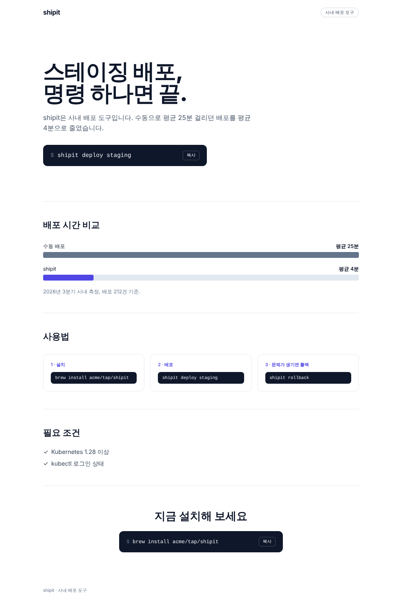
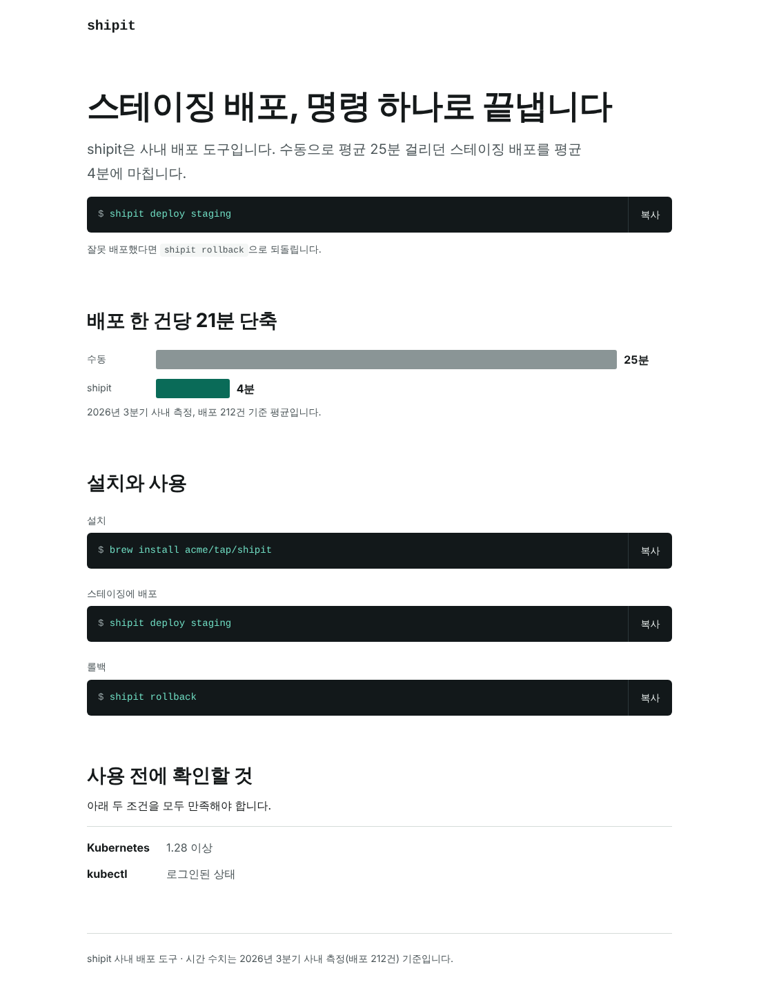

Claude Code가 쓰는 글과 화면에서 AI 티를 줄입니다
설치하면 Claude Code가 문서나 화면 작업을 시작할 때 글쓰기 지침(polish-writing)과 화면 지침(polish-ui)을 읽습니다. 파일을 수정한 직후에는 검사기가 과장 수식어, 번역투, 보라색 그라데이션 같은 표현을 줄 번호와 함께 Claude에게 돌려주고, Claude는 같은 턴에서 그 줄을 고칩니다.
claude plugin marketplace add jungrok5/ai-design claude plugin install ai-design@ai-design
필요한 것: Python 3.11 이상. 검사 대상: Markdown, HTML, CSS, JSX/TSX, Vue, Svelte, Astro. 버전 , MIT. Claude Code 없이 검사기만 쓰는 방법은 설치에 있습니다.




사용 전후
빈 폴더에서 같은 요청을 claude -p로 두 번 실행했습니다. 한 번은 Claude Code만, 한 번은 ai-design을 켜고 실행했으며, 요청에는 쓸 수 있는 사실을 모두 적었습니다. 결과 파일은 고치지 않고 site/samples/claude/에 그대로 두었습니다.
요청 전문
랜딩 페이지에서 달라진 점
| 항목 | Claude Code만 | ai-design 설치 후 |
|---|---|---|
| 첫 제목 | "스테이징 배포, 명령 하나면 끝." | "스테이징 배포, 명령 하나로 끝냅니다" |
| 수치 절 제목 | "배포 시간 비교" | "배포 한 건당 21분 단축"(25분 − 4분) |
| 사용법 | 번호 붙은 카드 세 장 | 복사 버튼이 있는 명령 블록 세 개 |
| 마지막 절 | "지금 설치해 보세요"와 설치 명령 | 없음. 측정 출처를 꼬리말에 적음 |
| 강조색 | Tailwind indigo-600 | 페이지 안에 정의한 토큰 --accent |
| 읽은 지침 | 없음 | polish-ui, polish-writing |
| 수정 직후 검사 | 없음 | 토큰 밖 색상 경고 2건을 받고 토큰으로 옮김(수정 3회) |
| Claude Code가 보고한 비용 | 0.071달러, 2턴 | 0.140달러, 10턴 |
아래는 Claude가 index.html을 쓴 직후 수정 직후 검사가 Claude에게 돌려준 내용입니다. 경로만 줄였습니다.
출시 공지 글
같은 사실로 사내 블로그용 출시 공지를 요청했습니다. ai-design을 켠 쪽은 polish-writing을 읽었습니다. 아래 검사 결과는 검사기로 페이지를 만들 때 다시 실행한 것입니다.
$ python3 style_check.py claude/notice-without.md
$ python3 style_check.py claude/notice-with.md
README 작업도 같은 방식으로 비교했는데, 두 결과의 차이는 "왜 shipit인가"라는 절 제목 하나였습니다. 세 작업 중 차이가 가장 컸던 것은 랜딩 페이지였습니다.
README 작업의 두 결과
규칙마다 무엇을 잡는지 보여 주는 예시(직접 쓴 전후 문장과 화면 코드)
주어진 제품 사실: URL을 입력하면 ChatGPT, Perplexity, Gemini 답변에 사이트가 인용되는지 검사하고 고칠 항목을 알려 줌.
$ python3 style_check.py landing-before.md
$ python3 style_check.py landing-after.md
주어진 제품 사실: 읽기 지연 1 ms 미만(p99, 단일 노드 벤치마크), 명령 예시 SET user:1 "kim".
$ python3 style_check.py card-before.html
$ python3 style_check.py card-after.html
Claude Code 안에서의 순서
수정 직후 검사는 Claude가 방금 고친 줄과 그 앞뒤 한 줄만 보고합니다. 기존 문서의 다른 줄은 건드리지 않게 하려는 것입니다. 보고할 것이 없으면 아무것도 출력하지 않으므로 Claude의 문맥에 더해지는 내용도 없습니다.
훅은 수정을 막지 않습니다. 일부러 인용한 나쁜 예시가 있는 줄에는 style-ignore를 표시해 다음 검사에서 빼고, 여러 줄이면 style-ignore-start와 style-ignore-end 사이에 둡니다.
- 문서나 화면 작업이면 Claude가 지침 스킬을 읽음
- Claude가 파일을 수정
- PostToolUse 훅이 수정된 줄을 검사(파일당 약 0.08초)
- 보고가 있으면 Claude가 같은 턴에서 수정
- 의도한 표현이면 사람이
style-ignore표시사람
설치
Claude Code 플러그인은 지침과 수정 직후 검사를 함께 켭니다. 나머지 방법은 검사기만 실행하므로 사람이 쓴 글과 다른 AI 도구가 만든 변경을 같은 규칙으로 검사할 때 씁니다.
- Claude Code, 팀 전체
- 프로젝트의
.claude/settings.json에 등록하면 팀원이 레포를 열 때 플러그인이 켜집니다. 개인 설치 명령은 맨 위에 있습니다.{ "extraKnownMarketplaces": { "ai-design": { "source": { "source": "github", "repo": "jungrok5/ai-design" } } }, "enabledPlugins": { "ai-design@ai-design": true } } - GitHub Action
- PR이 바꾼 파일만 검사해서 보고를 PR의 변경 줄 옆에 주석으로 표시합니다. 처음에는
warn-only로 시작합니다(팀 도입).on: pull_request jobs: style: runs-on: ubuntu-latest steps: - uses: actions/checkout@v4 - uses: jungrok5/ai-design@ with: warn-only: "true" - pre-commit
.pre-commit-config.yaml에 추가합니다. 이 레포는 태그를 쓰지 않으므로rev에는 CHANGELOG.md에 적힌 버전별 커밋을 씁니다. 아래 값은 커밋입니다.- repo: https://github.com/jungrok5/ai-design rev: hooks: - id: ai-design-style- 명령줄
- 파일이나 폴더를 넘깁니다.
error가 있으면 종료 코드 1, 없는 경로나 지원하지 않는 파일이 있으면 2를 돌려줍니다. 옵션은--help로 확인합니다.git clone --depth 1 https://github.com/jungrok5/ai-design ~/.ai-design python3 ~/.ai-design/plugins/ai-design/style/style_check.py README.md docs
- Cursor, Copilot, AGENTS.md
- 규칙 요약과 검사 명령을 담은 파일을 각 도구의 위치에 복사합니다. 이 도구들에는 수정 직후 검사가 없으므로 pre-commit이나 GitHub Action을 함께 씁니다.
도구 파일 둘 곳 Cursor ai-design.mdc .cursor/rules/GitHub Copilot ai-design.instructions.md .github/instructions/AGENTS.md를 읽는 도구(Codex 등) AGENTS.snippet.md 프로젝트 AGENTS.md에 붙여 넣기
해요체 제품, 문답집, 입문 자습서
한국어 규칙은 합니다체 문서를 기준으로 합니다. 해요체로 통일한 문서에는 ko-haeyo가 문장마다 보고되므로, 프로젝트 루트의 .style/rules.toml에서 끄고 씁니다. 문체가 섞이는지 보는 ko-register-mix는 그대로 남습니다. 문답집은 ko-question-heading, 입문 자습서는 ko-reader-talk을 같은 방법으로 끕니다.
[[rule]] id = "ko-haeyo" severity = "off"
팀 도입
이미 문서가 많은 레포에 바로 실패 처리를 걸면 기존 문장 때문에 모든 PR이 막힙니다. 보고만 하는 단계에서 시작해, 기존 보고를 기록해 두고, 새로 생기는 error만 막는 순서로 넓힙니다.
기준 파일은 파일 경로, 규칙, 찾은 표현으로 보고를 구분하므로 줄이 옮겨져도 같은 보고로 봅니다.
- GitHub Action을
warn-only: "true"로 추가하고 PR 주석을 한두 주 확인 - 오탐이 잦은 규칙을
.style/rules.toml에서 끄거나 낮춤 - 기존 보고를 기준 파일로 기록:
style_check.py --write-baseline .style/baseline.txt README.md docs - Action에서
warn-only를 지우고baseline: .style/baseline.txt를 지정 - 새
error가 있는 PR은 실패. 의도한 표현이면style-ignore표시사람
공개 문서에서 측정한 결과
사람이 쓴 한국어 문서에서 보고되는 것
사람이 쓴 공개 한국어 문서 4곳(파일 1,187개, 약 21만 줄)에 1.3.0 검사기를 실행했습니다. 검사에는 모두 7.3초가 걸렸고 보고는 1,553건이었습니다.
| 레포 | 파일 | error | warning | 가장 많은 보고 |
|---|---|---|---|---|
| reactjs/ko.react.dev | 229 | 54 | 315 | ko-uihae 77건 |
| toss/es-toolkit | 680 | 685 | 26 | ko-haeyo 663건(해요체 문서) |
| naver/fe-news | 82 | 107 | 101 | ko-emoji-marker 85건 |
| gyoogle/tech-interview-for-developer | 196 | 41 | 224 | ko-question-heading 72건(문답집) |
규칙 23개에서 4건씩 뽑은 92건을 Claude가 문맥을 읽고 판정했습니다. 41건은 고치면 문장이 짧아지거나 정확해졌고, 44건은 규칙이 겨냥한 표현이지만 문서의 장르나 문체로 보아 그대로 둘 만했으며, 7건은 오탐이었습니다. 오탐 7건 중 6건과 측정에서 드러난 성능 문제는 1.3.0에서 고쳤습니다. 레포별 커밋, 규칙별 수, 판정 예시는 docs/measurement.md에 있습니다.
AI 글과 사람 글의 보고 비율
같은 제목으로 Claude Opus 5.5, Sonnet 5.5, Haiku 5.5가 쓴 문서와 사람이 쓴 문서를 비교했습니다(한국어 178쌍, 영어 69쌍). 아래는 규칙을 고를 때 쓰지 않은 시험용 문서 중 보고가 하나 이상 나온 문서의 비율입니다(1.6.0 검사기, 문체 혼용 규칙 제외).
| 기술 문서 | AI 문서 | 사람 문서 |
|---|---|---|
| 한국어 | 26/35 (74%) | 98/139 (71%) |
| 영어 | 0/13 (0%) | 36/150 (24%) |
1.5.1 검사기에서는 한국어 AI 문서가 22/35(63%), 영어 사람 문서가 35/150(23%)이었고 나머지 두 칸은 1.6.0에서도 같습니다. 한국어에서는 AI 문서와 사람 문서의 비율이 비슷하고 영어에서는 사람 문서만 보고됩니다. 사람 쪽 보고는 한국어에서는 대부분 번역문의 번역투입니다. 영어에서는 en-buzzword, en-is-avoidance, dash-overuse 등에 흩어져 있습니다. 그래서 이 검사기로 글을 쓴 주체를 판단할 수는 없습니다.
AI 글에서만 자주 나온 한국어 표현 4개는 따로 골라 경고 규칙으로 넣었습니다. 4개 중 하나 이상이 보고된 문서는 시험용에서 AI 35개 중 9개(26%), 사람 139개 중 2개(1.4%)입니다.
| 규칙 | AI 문서 | 사람 문서 | AI 문서의 예 |
|---|---|---|---|
ko-hedged-advice | 14% | 1.4% | 점진적으로 올리는 편이 안전합니다 |
ko-advise | 6% | 0% | 한 번 더 확인하시길 권합니다 |
ko-template-heading | 6% | 0% | ## 이달의 실무 체크리스트 |
ko-count-runup | 6% | 0% | 눈여겨볼 변경은 세 가지입니다 |
방법과 한계는 docs/measurement.md, 데이터는 research/ai-vs-human/에 있습니다.
다른 검출 도구에서 가져온 패턴
MIT, Apache-2.0 라이선스의 AI 문체 검출 도구가 잡는 패턴을 같은 문서로 측정하고 사람 문서를 거의 보고하지 않은 것만 경고 규칙으로 넣었습니다. 출처는 1.5.0에서 11곳, 1.6.0에서 13곳으로 모두 24곳입니다. 1.5.0에서는 패턴 131개를 측정해 한국어 20개와 영어 22개를 넣었습니다. 시험용 사람 문서에서 이 규칙들의 보고는 한국어 139개 중 0개, 영어 150개 중 2개입니다. 이 패턴들은 기술 문서보다 칼럼 말투를 겨냥하므로 칼럼 형식으로 생성한 AI 글 16편에서 따로 확인했습니다. 영어 8편 중 5편("It isn't X. It's Y", "The question isn't X")과 한국어 8편 중 2편에서 보고되었습니다.
1.6.0에서는 새 출처 13곳(모두 MIT)에서 기존 규칙이 잡지 않는 후보 한국어 57개와 영어 37개를 같은 기준으로 측정해 한국어 20개와 영어 13개를 넣었습니다. ko-personified-subject는 "시장이 원한다", "결과가 증명한다"도 보고하도록 넓혔습니다. 시험용 사람 문서에서 이 규칙들의 보고는 한국어 139개 중 1개, 영어 150개 중 2개입니다. AI 문서에서 차이가 난 규칙은 ko-bold-label-list 하나입니다. - **성능:** …처럼 굵은 머리말과 쌍점으로 시작하는 목록 항목이 파일에 3회를 넘고 1,000단어당 15회를 넘으면 보고합니다. 시험용에서는 AI 문서 35개 중 8개(23%)를 보고했고 사람 문서 139개는 하나도 보고하지 않았습니다. 영어 13개는 기술 문서와 칼럼 형식 글 어디에서도 AI 글을 보고하지 않았습니다. 후보별 수와 넣지 않은 이유는 research/oss-patterns/에 있습니다.
같은 버전에 넣은 ko-metaphor-noun은 연결이나 과정을 비유 명사로 쓴 표현("샘플 페이지로 가는 길이 있습니다", "~의 여정", "전체 지도")을 보고합니다. 저장소 주인이 실제 Claude 출력에서 본 문장을 근거로 넣었고 측정으로는 사람 문서를 보고하지 않는다는 것만 확인했습니다(학습용 0/525, 시험용 0/139, 표본 밖 Markdown 0/836). 비교 묶음의 AI 문서에서는 학습용 1건만 보고되었습니다. 그 문서는 다른 규칙이 이미 보고하던 문서여서 위 표의 비율은 바뀌지 않습니다. 측정 방법은 docs/measurement.md에 있습니다.
FAQ
- 이미 있는 문서도 한꺼번에 고쳐야 하나요?
- 아닙니다. 수정 직후 검사는 Claude가 방금 고친 줄만 보고합니다. GitHub Action은 PR이 바꾼 파일만 검사합니다. 나머지는 기준 파일로 기록해 두고 필요할 때 고칩니다.
- 시간과 토큰은 얼마나 드나요?
- 검사는 5 KB 파일에서 Python 시작 시간을 포함해 약 0.08초, 측정한 가장 큰 348 KB 파일에서 0.3초가 걸렸습니다. 보고가 없으면 Claude에게 아무것도 전달하지 않고, 보고가 많아도 15건까지만 전달합니다. 지침 스킬은 읽을 때 토큰이 듭니다. 위 비교의 세 작업에서 Claude Code가 보고한 비용은 ai-design을 켰을 때 1.4–2.0배였습니다.
- 코드 작업에도 끼어드나요?
- 수정 직후 검사는 Markdown, HTML, CSS, JSX/TSX, Vue, Svelte, Astro 파일만 보고
.py,.ts같은 파일은 출력 없이 넘어갑니다. 지침 스킬은 설명문을 보고 Claude가 문서나 화면 작업에서만 고르며, 코드 버그 수정에서 고르지 않는지 확인하는 평가 케이스를 evals/에 두었습니다. - AI가 쓴 글인지 판별하나요?
- 판별하지 않습니다. 표현을 찾는 문체 검사기이므로 사람이 쓴 문서에서도 번역투나 군더더기 표현을 보고합니다(측정).
- 영어 문서에도 쓸 수 있나요?
- 쓸 수 있습니다. 영어 규칙은 개, 한국어 규칙은 개이고 화면 코드 규칙 개는 언어와 상관없이 적용됩니다. 최근 Claude가 쓴 영어 기술 문서에서는 보고된 문서가 없었습니다(시험용 13개 중 0개, 측정). 영어 규칙은 칼럼, 블로그, 제품 소개 문구에서 더 자주 보고합니다.
디자인 시스템 Clear
프로젝트에 디자인 토큰이 없을 때 polish-ui가 쓰는 기본값입니다. 라이트(흰 바탕, 파란 강조색)와 다크(그래파이트) 토큰, ds- 컴포넌트, 복사 버튼과 테마 전환 스크립트로 되어 있고, 이 페이지도 Clear로 만들었습니다.
위 비교의 랜딩 페이지에서 Claude는 Clear를 가져오지 않고 페이지 안에 토큰을 따로 정의했습니다. Clear를 쓰게 하려면 design/ 폴더를 프로젝트에 복사해 두고 그 파일을 쓰라고 요청합니다.
cp -r ~/.ai-design/plugins/ai-design/skills/polish-ui/design ./design
컴포넌트 목록과 쓰는 규칙은 DESIGN.md에 있습니다.
한계
- 정규식이라 문맥을 모릅니다. 자연스러운 경우가 많은 규칙은 warning으로 두었습니다. 일부는 한 파일에 여러 번 나오거나 1,000단어당 일정 횟수를 넘을 때만 보고합니다(
max_per_file,max_per_1k). - 문장 단위로만 검사합니다. 섹션 반복이나 같은 사실의 중복 같은 페이지 구성은 지침 스킬에만 적혀 있습니다.
- 사용 전후 비교는 작업마다 한 번씩 실행한 결과입니다. 같은 요청도 실행할 때마다 결과가 달라집니다. 비교 뒤에 그 결과에서 본 표현을 잡는 규칙 4개(
ko-question-heading,ko-slogan,ko-cta-now,ui-default-accent)를 추가했으므로, 비교에 붙은 검사 결과는 독립적인 근거가 아닙니다.
규칙은 한국어 개, 영어 개, 언어 공통 개, 화면 코드 개로 모두 개이고, 목록은 style_check.py --list-rules로 확인합니다.